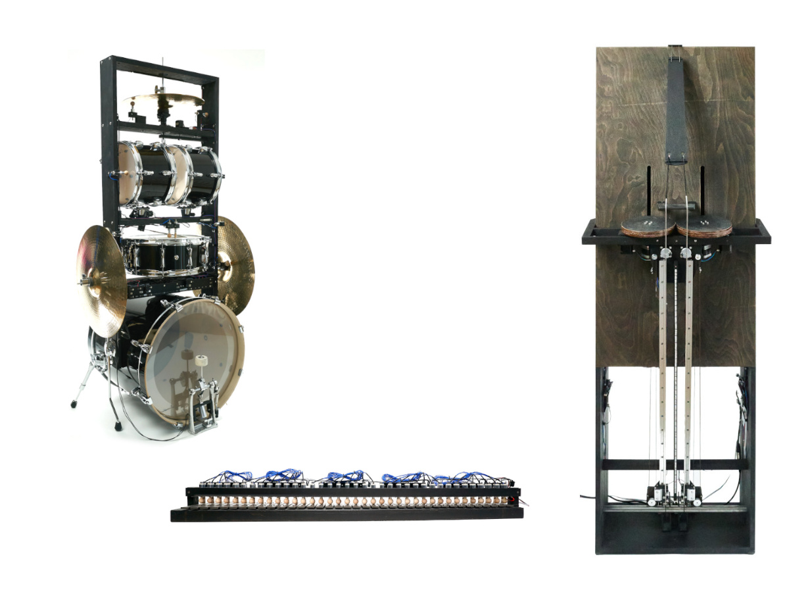
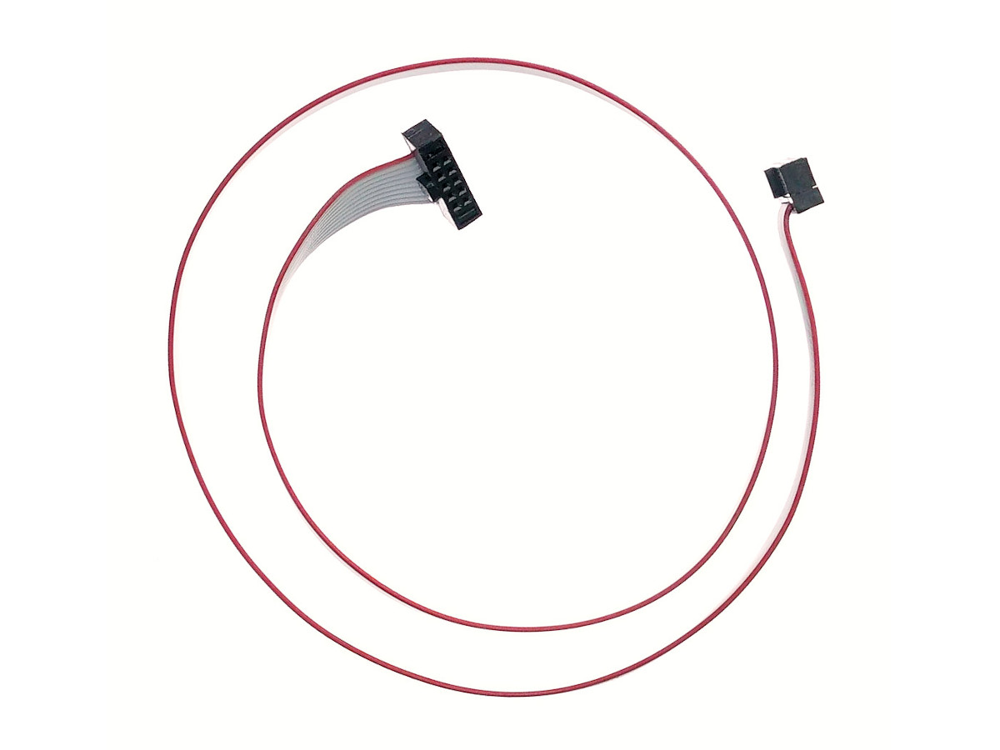

37 Bar Glockenspiel
Notes are controlled by a trigger and a damper, it allows a piano-like velocity and tone duration control; MIDI Note-Off will cause the currently playing tone to be damped. One RGB LED per note visualizes the playing notes. It is built using five pulse devices and one control device.
| Power Supply | 24 V, 120 W |
| Connectors | power supply, V2 plug. V2 socket |
| Dimensions | 120 × 23 × 14 cm |
| Weight | 9 kg |
Building Blocks for Musical Devices
V2 devices are connected via a bi-directional full-duplex RS422 serial connection. The connectors are called V2 Plug and V2 Socket. Additional wires supply power to the devices and connect the microcontroller's USB port to a USB host.
V2 devices are daisy-chained, a child device's V2 Plug is connected to the parent device's V2 Socket. The V2 wire protocol carries the address of the device it talks to, the parent devices forward the messages.
V2 devices are configured with a web browser. The firmware is updated using the web interface.
Orientation Sensor
Intelligent 9-axis absolute orientation sensor, combining accelerometer, gyroscope, magnetometer.
| Device power supply | V2 plug |
| Connectors | V2 plug, V2 socket |
| Dimensions | 49 × 49 × 8 mm |
| Weight | 20 g |
Ribbon Cable with IDC Connectors
| Wires | 10 |
| Pins | 2 × 5 |
| Pitch | 1.27 mm |

USB to V2 Socket Controller
Active controller to connect a USB host to a V2 socket. It converts MIDI signals to a full-duplex, bi-directional RS422 serial connection, which can be used over long distances.
With customized configuration, it can act as a standalone device which maps MIDI signals and drives devices like pad, pulse or express.
| Device power supply | USB host power |
| Connectors | USB-C, V2 socket |
| Dimensions | 66 × 18 × 8 mm |
| Weight | 13 g |
Device Controller
Connects devices like pulse or step. It supplies power to the connected devices and can drive an RGB LED strip.
A usb connector is used to connect it directly to a USB host. For longer distances, a connect device can be used to connect a USB host over a RS422 serial connection.
It is used for the glockenspiel-37, connects five pulse devices drives the 37 LEDs.
| Device power supply | 6-24 V |
| LED strip maximum current | 2.5 A |
| Connectors | power supply wire connectors, LED wire connectors, V2 plug, V2 socket |
| Dimensions | 71 × 18 × 8 mm |
| Weight | 31 g |
DMX Adapter
The device is configured with a web browser. An Ableton Live device maps track automation to DMX values.
| Device power supply | USB host power |
| Connectors | USB-C, 2.5 mm jack |
| Dimensions | 66 × 18 × 8 mm |
| Weight | 13 g |
16 Channel Analog Expression Controller
Samples the connected potentiometers from expression pedals, controllers, knobs, and sends out MIDI Control Change values accordingly. The expression devices are connected with 2.5 mm TRS jacks.
| Channels | 16 |
| Device power supply | V2 plug |
| Connectors | 2.5 mm TRS jacks, V2 plug, V2 socket |
| Dimensions | 191 × 49 × 8 mm |
| Weight | 78 g |
2 Channel Analog Expression Controller
Samples the connected potentiometers from expression pedals, controllers, knobs, and sends out MIDI Control Change values accordingly. Alternative firmware supports Force-Sensitive-Resistors (FSR) acting as drums pads, similar to pad. The expression devices are connected with 2.5 mm TRS jacks.
| Channels | 2 |
| Device power supply | V2 plug |
| Connectors | 2.5 mm TRS jacks, V2 plug, V2 socket |
| Dimensions | 61 × 49 × 8 mm |
| Weight | 26 g |
Analog Expression Knob
Potentiometer with a 2.5 mm TRS jack. The ring supplies the reference voltage, the tip is connected to the potentiometer's wiper.
| Resistance | 10 kΩ |
| Connectors | 2.5 mm TRS jack |
| Dimensions | 49 × 49 × 26 mm |
| Weight | 40 g |
Drum Pad
With Note-On and Note-Off Velocity, Aftertouch, RGB Light.
| Device power supply | V2 plug |
| Connectors | V2 plug, V2 socket |
| Dimensions | 87 × 8 mm |
| Weight | 55 g |
Power Supply and Debug Connector
Inserted into a V2 connection, it supplies the devices connected to its V2 socket with power. The power connection of V2 plug side will stay disconnected.
It provides USB access to the device connected to its V2 socket. It allows to debug the connected device, while the device still maintains the data connection to its V2 parent device.
| Connectors | USB-C, V2 plug, V2 socket |
| Dimensions | 67 × 18 × 8 mm |
| Weight | 12 g |
16 Channel Solenoid Controller
Intelligent solenoid power controller, automatically adjusts to changes in supply voltage or different solenoid parameters.
It is driven by commands which specify the length in seconds and the power in watts of a solenoid trigger impulse. A typical value for a trigger of a glockenspiel-37 note is a 30 milliseconds and a 2.5 watts pulse. The controller calculates the PWM duty cycle using the measured solenoid resistance and the supplied voltage.
The controller constantly measures the supply voltage and solenoid resistance. Changes are visualized with the channel LEDs. To protect itself, it monitors the overall current it draws from the power supply and isolates channels which are short cut.
| Channels | 16 |
| Input voltage | 6-24 V |
| Maximum overall current | 5 A |
| PWM frequency | 20 kHz |
| Device power supply | V2 plug |
| Connectors | power supply wire connectors, solenoid wire connectors, V2 plug, V2 socket |
| Dimensions | 171 × 49 × 8 mm |
| Weight | 72 g |
Proximity Sensor
Proximity and ranging sensor. Detects an object in 10mm up to 3m distance in the field of view, and sends MIDI control messages accordingly.
| Device power supply | USB host power |
| Connectors | V2 plug, V2 socket |
| Dimensions | 49 × 49 × 8 mm |
| Weight | 19 g |
Serial MIDI Interface
Serial MIDI to V2 socket adapter.
| Device power supply | V2 plug |
| Connectors | V2 plug, V2 socket |
| Dimensions | 49 × 61 × 8 mm |
| Weight | 25 g |
4 Channel Stepper Motor Controller
Intelligent stepper driver with acceleration ramp, absolute step movement, and motor rotation interface.
| Channels | 16 |
| Input voltage | 6-24 V |
| Device power supply | V2 plug |
| Connectors | power supply wire connectors, stepper motor wire connectors, V2 plug, V2 socket |
| Dimensions | 49 × 147 × 8 mm |
| Weight | 70 g |
USB to Ribbon Cable Connector
Connects a USB host to a device's V2 plug. It supplies the host's power to the connected device. This adapter is used to update a device's firmware via USB.
The maximum length of the ribbon cable is limited by the USB signal and cannot exceed a few meters. To bridge long distances, a connect controller can be used which uses RS422 serial connections instead of USB.
| Connectors | USB-C, V2 socket |
| Dimensions | 56 × 18 × 8 mm |
| Weight | 10 g |
External links to related projects or useful ressources
Kay Sievers Videos Classical Music MIDI FilesKay Sievers
Die kostenlosen und frei zugänglichen Inhalte dieser Webseite wurden mit größtmöglicher Sorgfalt erstellt. Der Anbieter dieser Webseite übernimmt jedoch keine Gewähr für die Richtigkeit und Aktualität der bereitgestellten kostenlosen und frei zugänglichen journalistischen Ratgeber und Nachrichten. Namentlich gekennzeichnete Beiträge geben die Meinung des jeweiligen Autors und nicht immer die Meinung des Anbieters wieder. Allein durch den Aufruf der kostenlosen und frei zugänglichen Inhalte kommt keinerlei Vertragsverhältnis zwischen dem Nutzer und dem Anbieter zustande, insoweit fehlt es am Rechtsbindungswillen des Anbieters.
Diese Website enthält Verknüpfungen zu Websites Dritter ("externe Links"). Diese Websites unterliegen der Haftung der jeweiligen Betreiber. Der Anbieter hat bei der erstmaligen Verknüpfung der externen Links die fremden Inhalte daraufhin überprüft, ob etwaige Rechtsverstöße bestehen. Zu dem Zeitpunkt waren keine Rechtsverstöße ersichtlich. Der Anbieter hat keinerlei Einfluss auf die aktuelle und zukünftige Gestaltung und auf die Inhalte der verknüpften Seiten. Das Setzen von externen Links bedeutet nicht, dass sich der Anbieter die hinter dem Verweis oder Link liegenden Inhalte zu Eigen macht. Eine ständige Kontrolle der externen Links ist für den Anbieter ohne konkrete Hinweise auf Rechtsverstöße nicht zumutbar. Bei Kenntnis von Rechtsverstößen werden jedoch derartige externe Links unverzüglich gelöscht.
Die auf dieser Website veröffentlichten Inhalte unterliegen dem deutschen Urheber- und Leistungsschutzrecht. Jede vom deutschen Urheber- und Leistungsschutzrecht nicht zugelassene Verwertung bedarf der vorherigen schriftlichen Zustimmung des Anbieters oder jeweiligen Rechteinhabers. Dies gilt insbesondere für Vervielfältigung, Bearbeitung, Übersetzung, Einspeicherung, Verarbeitung bzw. Wiedergabe von Inhalten in Datenbanken oder anderen elektronischen Medien und Systemen. Inhalte und Rechte Dritter sind dabei als solche gekennzeichnet. Die unerlaubte Vervielfältigung oder Weitergabe einzelner Inhalte oder kompletter Seiten ist nicht gestattet und strafbar. Lediglich die Herstellung von Kopien und Downloads für den persönlichen, privaten und nicht kommerziellen Gebrauch ist erlaubt.